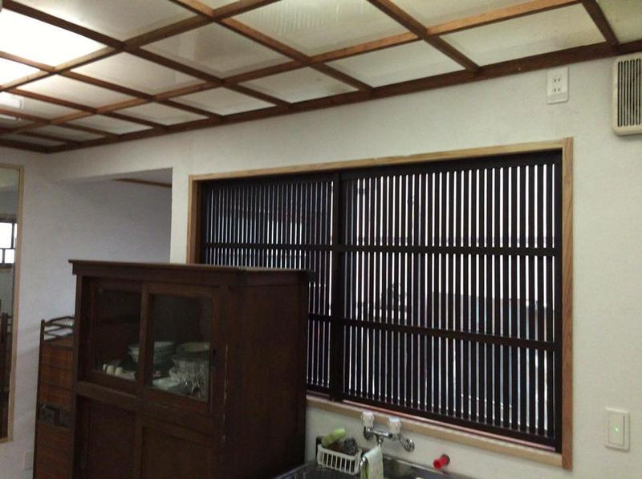
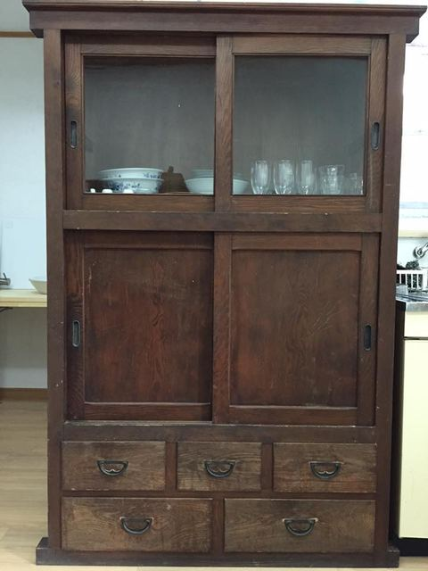
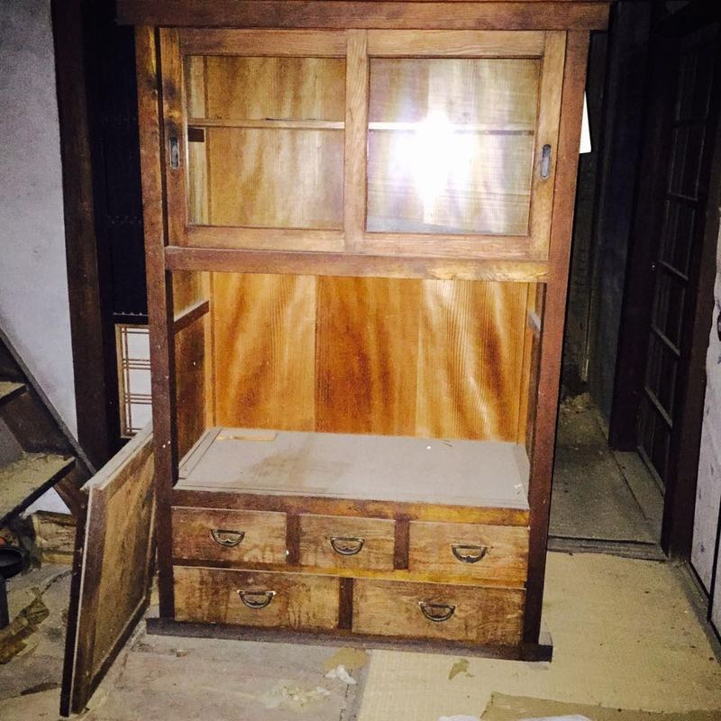
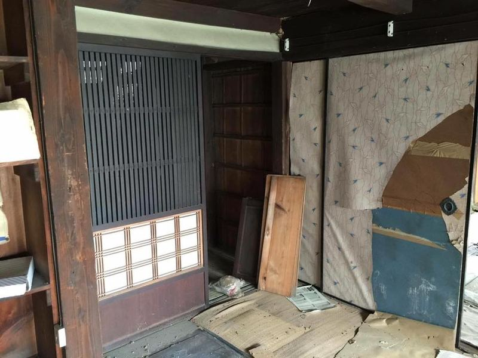
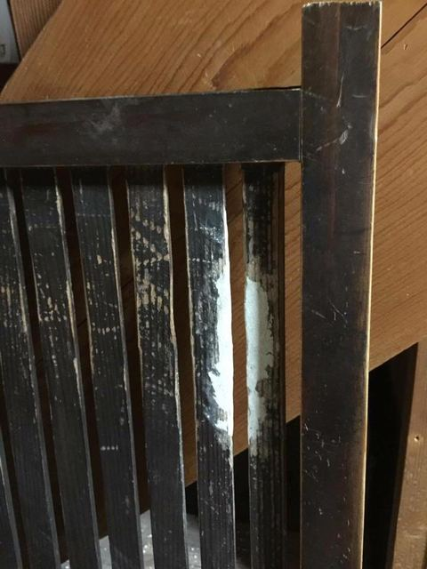
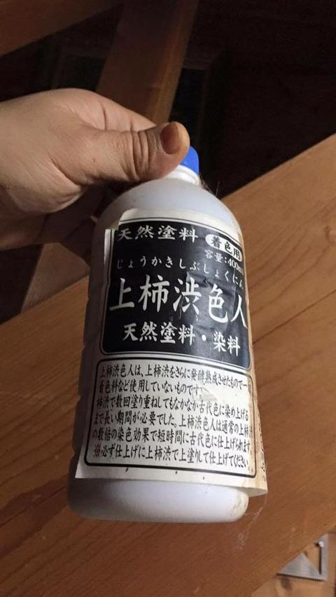

古民家再生の記録
頂きもの② 水屋・格子戸
2015年の暮れに古い水屋（食器棚）と格子戸を頂きました。
急遽、食器棚を調達しないといけない事になり困っていたら、佐島のお母さんから「もう20年も空いとる親戚の家に古い食器棚があったと思うけぇ使えるなら使うてええよ。」と言って頂き、早速見に行ったところ、これが素晴らしい水屋でした。
大晦日なのに友人に来て貰ってワゴンで汐見の家のキッチンに運び入れると、流しと洗面台スペースの間に誂えた様に収まりびっくり。お正月前にすごいお年玉を頂きました。
その時に見かけた素敵な格子戸も後日頂きました。シロアリが来ていたので、友人が格子部分を切り出し修繕してキッチンの窓と五右衛門風呂の脱衣所に取り付けてくれました。お洒落です！
眠っていた貴重な家具・建具が汐見で蘇りました。今回もご縁に感謝です。
【2019.1追記】
後日、この家では友人が「古いものレスキュー」のプチイベントを開いてくれました。
また、この家も日系移民ゆかりの家と判り、屋根裏から立派なトロンコ(旅行用の大型トランク)が見つかりました。今は汐見の長屋門に収まっています。






塗料もこだわり。